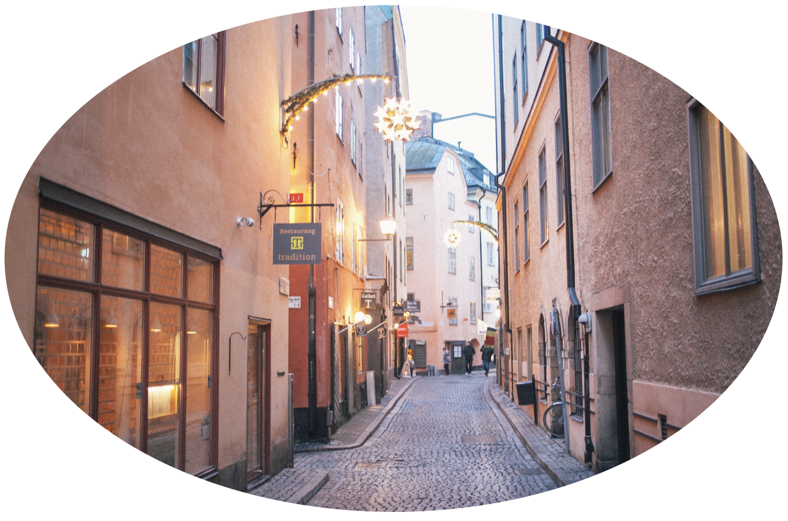
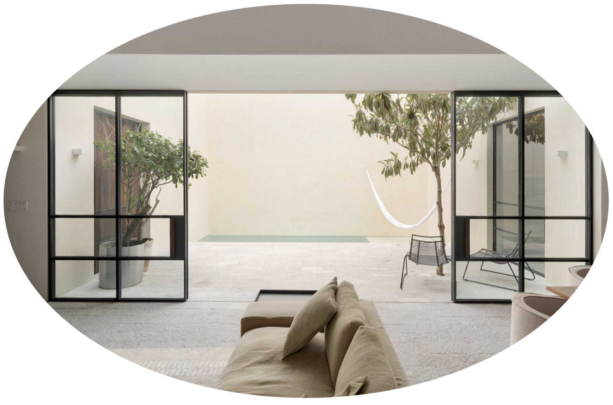
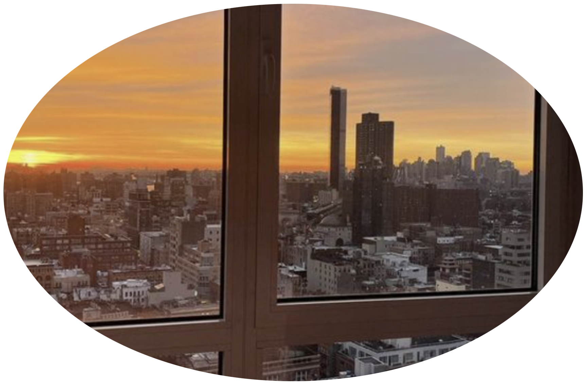
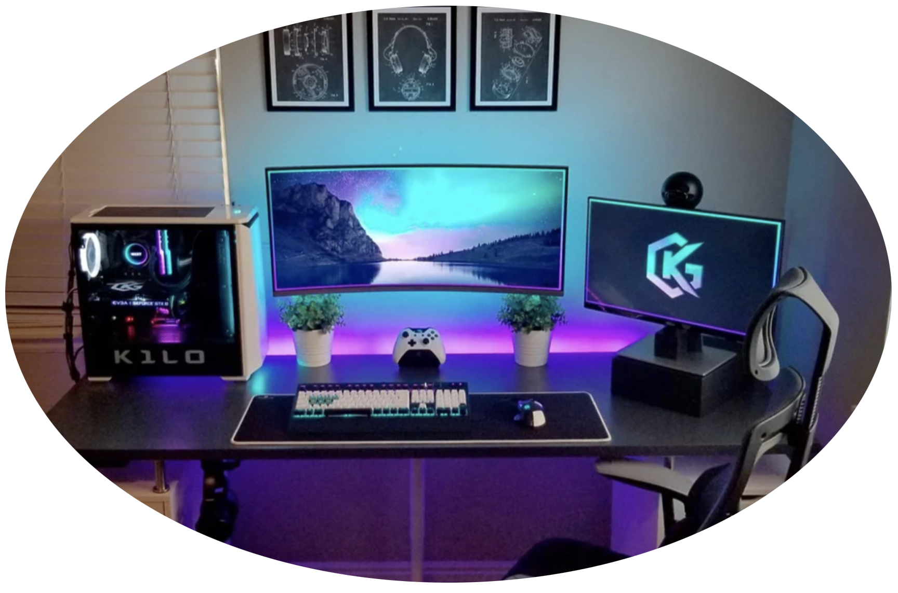
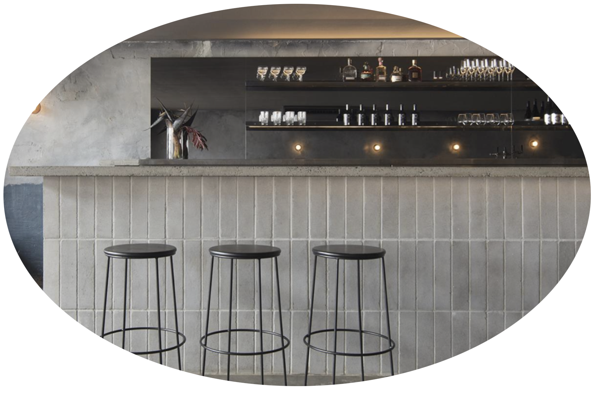

이세영씨 맞으신가요? 당신은 2022년 3월 1일 오후 10시 56분, 과로사로 죽었습니다.
여기가 어디나구요? 여긴 굿플레이스에요. 여기선 절대 과로로 쓰러지지 않고 죽을 일도 없을 겁니다.
맛있는 음식만을 무한대로 먹을 수 있구요, 영원한 행복을 느낄 수 있는 공간이죠. 그러니 아무 걱정도 마세요!
가장 먼저 당신이 좋아하는 모든 조건을 갖춘 공간, 집을 제공하려고 합니다.
어떤 집에서 살고 싶으신가요? 어떤 것이든 좋으니 말해주세요. 여긴 굿플레이스니까요.

제가 살아있을 때는 도시에서 살았어서, 유동인구는 너무 많아 북적거리고 밤에는 너무 시끄러웠어요
경관도 썩 좋지는 않았어요. 그냥 아파트 단지라서 그런가.
그래서 유럽의 예술적이고 평화로운 분위기가 너무 좋았아요.
집에서 멀지않은 곳에 다채롭고 아름다운 거리가 있고 연주자가 악기를 연주하고 노래를 부르고…
집 앞 5분거리에는 브런치 카페가 꼭 있었으면 좋겠어요. 가끔 당이 땡길때 먹으러도 가고 힐링도 하고 싶네요.
그리고 제가 워낙 분식을 좋아해서.. 분식집도 꼭 있어야 할 것 같아요. 물론 유럽풍이랑은 어울리지 않겠지만요ㅎㅎ "

"무조건 집은 깔끔해야죠...! 모던하고 화려하지 않은 스타일이 좋아요."
그런 다음 깔끔한 벽지에 제가 좋아하는 포스터들을 붙이고 싶어요.
옛날에 일본여행가서 안도 다다오의 건축물을 본적 있어요. 전체적으로 콘크리트로 된 건축물과 속이 뻥 뚫리는
넓은 공간을 볼 수 있었어요. 개인적으로 그런 멋있는 집에 살고 싶었다는 생각도 했었어요.
집에서 그 넓은 공간을 바라보면서 힐링하고 싶어요."

"원래는 혼자 사는게 무조건 좋다고 생각했어요. 하지만 살면서 연애도 해보고 생각해보니
항상 내 편이 되어주고 곁에 있어줄 사람이 있다는게 정말 좋은 것 같아요. 잠들때, 아침에 일어날 때
사랑하는 사람이 늘 옆에 함께 있다면 그게 정말 행복이죠.. 전 외로움이 많아서 늘 사랑받는 기분을 느낄때
안정적으로 느껴요. 취미도 함께하고 맛있는 것도 같이 먹고싶어요. 음, 그런 사람이 굿플레이스에 있을까요?"

"전재산을 털어 게임을 살 정도로 좋아해요. 특히 닌텐도스위치로 젤다의 전설이라는 게임을 한 적이
있었는데 정말정말정말 재밌게 했어요. 그거 말고도 다른 닌텐도게임, 스팀 인디게임 등 다양한 게임을 해봤지만
다른 게임도 해보고 싶어요. 새 집이 생기면 웬만한 게임은 다 돌아가는 고사양 컴퓨터가 있으면 좋겠고
닌텐도 스위치에 엄청 많은 게임이 들어있다면 정말 바랄게 없어요. 정말 하루종일 할 수도 있어요."

"제가 술을 좋아하기도 하지만 특히 맛있고 단 술을 좋아해요. 혼자 먹는것보단 여럿이 먹는게 더 좋구요.
내가 좋아하는 노래를 틀고 내가 좋아하는 사람들을 초대해서 맛있는 술을 먹고 싶어요.
맛있는건 같이 먹어야 더 맛있더라구요.
평소엔 돈 걱정때문에 못먹는 와인과 칵테일을 여기선 맘대로 먹을 수 있겠죠? 상상만해도 신난다~"
답변감사합니다. 곧 완벽한 집을 제공해 드리겠습니다.
-Goodplace-